前言
首先，這篇要感謝公司的架構師 Harry、好友饅頭和 Jamis，提供了非常的多 Redis 經驗。
其實 Redis 的相關文章已經有非常非常非常多，不光是對岸，甚至國內大家也已經有大量的文章產出了，
也已經是一個非常成熟的 Open Source 產品，而最近，因為剛好有要建立高可用性的 Redis 的需求，
所以就在這邊，把整個過程寫下來，畢竟人年紀大了，很容易忘東忘西…
Redis HA
在 Redis 的建置上，最簡單的，當然就是單機一台，單機一台只要去官網下載，下載完畢後，安裝，
並且把設定檔設定完，基本上就可以進行運作。
接下來比較複雜的建設，大概就是 Cluster 和 HA 了；在 Redis Cluster 指的是當資料 I/O 過於龐大，
如果一台沒辦法處理如此龐大的資料量，這個時候，就可以透過 Cluster 的機制，將資料做切分，
並依據 Redis 內部的機制，算出要放到哪一台 Redis Server；換言之，在 Redis 的 Cluster，
指的是多台資料做分流，而非當作備援。
說到備援，也就是今天的主題，Redis 的高可用性 ( HA )，目的是希望當我們使用 Redis 的情況下，
當主要進行資料處理的那台 Server 掛掉的時候，可以快速的切換到備援機而不中斷
( 其實還是可能會有短暫的中斷和出錯 )，讓服務能持續地進行，而不影響；
其次，因為 Redis 主要是將資料存放於 Memory ，所以當整台機器服務當掉的時候，也可能會有資料遺失，
所以透過 HA，也可以自動地將 主 ( Master ) 和 從 ( Slave ) 的資料進行同步。
當然，如果要更複雜，就可以搭配 Cluster 和 HA ，這樣就可以規劃出，既可以處理大量 I/O ，
又可以擁有高可用性的服務環境。
有興趣的可以參考這篇文章
最後，在 Redis HA 的架構下，其實大家習慣稱為 Reids Sentinel ( 哨兵 )，為什麼稱為 Sentinel (哨兵)，
其實原因很簡單，因為要有一台 Sentinel (哨兵) Server，來幫忙仲裁，決定目前哪台還活著，哪台可以提供服務，
換言之，以 Redis Sentinel 的架構來說，至少需要三台 Server，Master、Slave 和 Sentinel，
由 Sentinel 來進行 Master 與 Slave 的監控，當 Master 掛點的時候， Sentinel 會將 Slave 變更為 Master，
而原本死翹翹的 Master 經過修復重新開機後，復活後，Sentinel 會將原本的 Master 改為 Slave。
沒錯，這就是 Sentinel 的功能，監控著哪台活著，哪台死掉。
看到這邊，對，聰明的你，你一定會有一個疑問，如果 Sentinel 自己偷懶，或是死掉怎麼辦!?
所以，在官方文件裡面，官方也建議要有 “奇數” 的 Sentinel 來保持 Sentinel 的可用性。
為何要 “奇數” 呢，那是因為，仲裁機制的關係，如果是 2台 Sentinel 的情況下，其中一台說 Master 死掉了，
另外一台說，沒有，他活著好好的，那…到底要聽誰的呢 ??
所以才會需要 “奇數” 的 Sentinel，目的就是希望可以透過表決的方式，來證明 Master 死掉了。
( 所以如果有三台，只要兩台投 Master 掛了，那就符合了切換的程序，其實官方也建議 Sentinel 至少三台… )
所以這又衍生一個問題，所以我們建立高可用性，是否至少要 5 台 Server …
其實也不然，就如這篇文章 的發問者問的一樣，
我們也可以把 Sentinel 裝在 Master 和 Slave 裡面，這樣只要三台 Server 一樣可以完成，
但也如同那篇文章所敘述的，這不一定是個好主意，也可能有很多不確定的因子…
同樣的，透過 Docker run Redis 也不失為一種手法，但無論怎樣的手法，都會有優缺點，這邊小弟就不探討此塊。
而這篇文章，主要會用三台 Server 來進行 Reids Sentinel ( HA ) 的建置。
其中兩台就是單純的 Master 和 Slave，最後一台則是只裝 Sentinel。
小弟這邊使用 Azure，開了三台 VM 來完成這次的實作，分別是
- Cache-1 - 10.0.0.4
- Cache-2 - 10.0.0.5
- Sentinel - 10.0.0.6
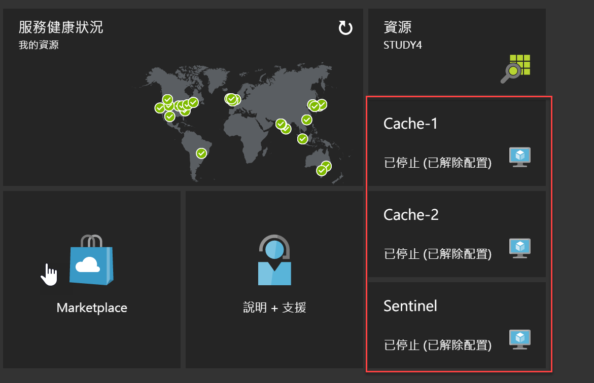
安裝第一台 Redis Server
每次要安裝程式，第一步驟是甚麼?，當然就是要去官網進行下載，所以我們可以先去 Redis 的官網溜溜，
而我們可以從官網的地方，找到官網下載，但是大家可能會發現，
基本上官網只提供的是 Linux 的版本；這是正確的；因為 Redis 最初的發展，就是在 Linux 上，
而官網提供的，基本上也只有 Linux 的相關版本；甚至，如果有任何的問題與服務，官方也只 support Linux 而已喔。
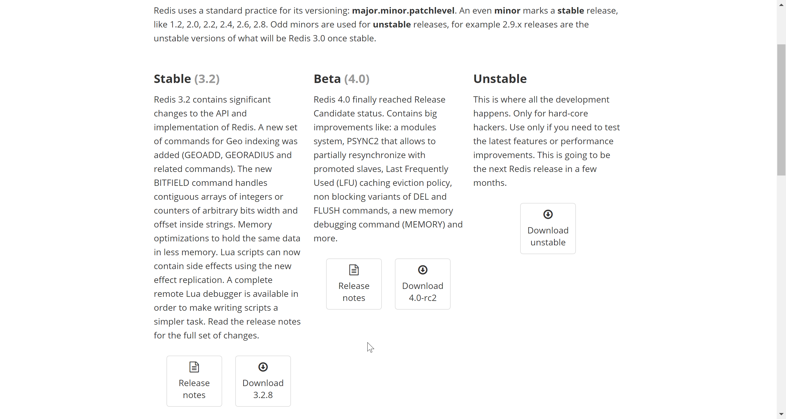
但我們今天要裝的是 Windows 版本，那 Windows 版本在哪邊勒？Windows 版本的位置在此
其實大家也不用擔心，雖然是 Windows 版本，但是整個團隊，是 Microsoft 的 Open Tech 團隊所維護，
甚至所有的 Redis for Windows 的 Source Code，全部都放在 GitHub 上，也是完全的 Open Source。
相同的，如果是使用 Windows 版本的 Redis ，就必須要來此 GitHub 尋求支援了喔。
我們可以從底下位置，找到 Windows 版本的下載。
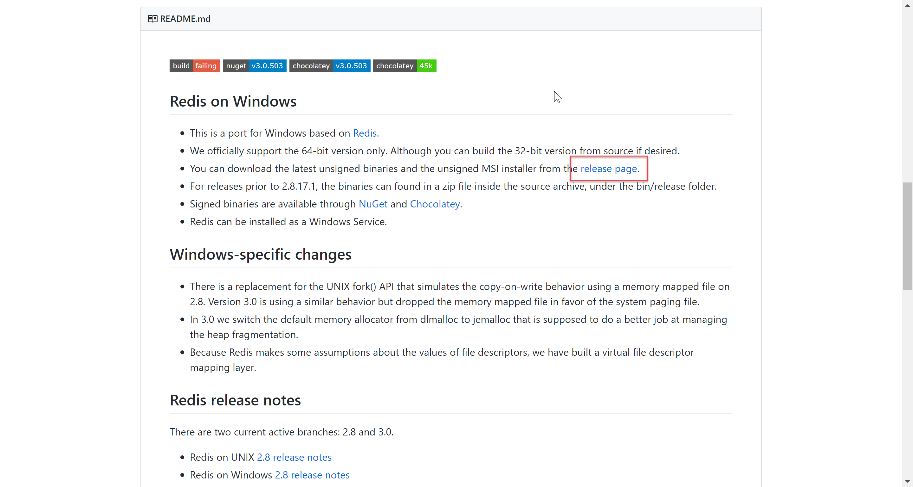
Windows 版本 Redis 下載點進去後，我們就可以看到兩個，
一個是 msi，一個是 zip，兩個內容很雷同，唯一的差別是， msi 會自動幫你把 Redis 註冊到 Windows Service 服務，
未來你就可以透過 UI 來停止或啟動，而 zip 裡面則是解開就可以直接執行 exe 使用
( 當然，你也可以下載 zip ，然後自己註冊成 Windows Service )
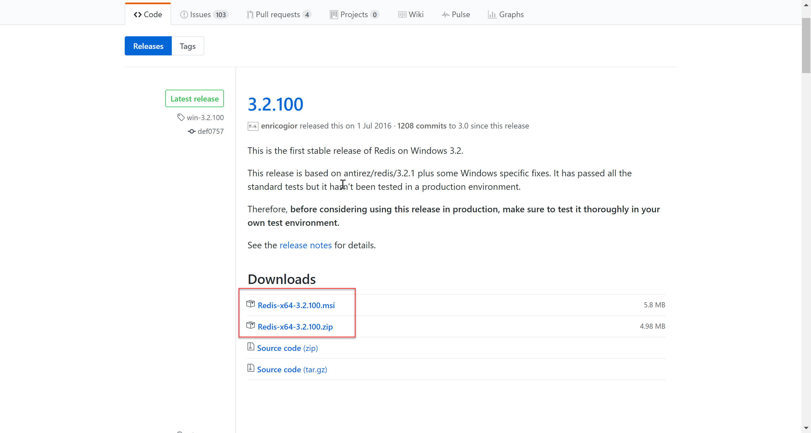
了解下載位置後，接下來，我們進入 Cache-1 的 VM 裡面，並且下載 msi，然後，我們將下載下來的 msi 點兩下進行安裝。
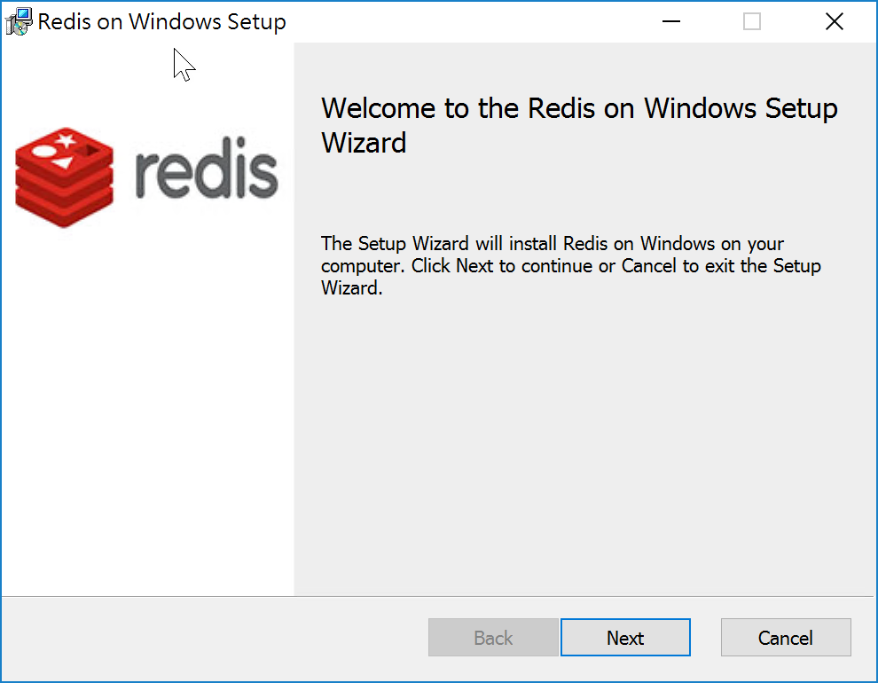
到這一步的時候，記得勾選 [Add the Redis Installation folder to the PATH environment variable.]，
因為等下我們會使用到 Redis 的 Cli ，所以把 Redis 加入到環境變數 PATH 裡面，就可以不用到 Redis 底下的目錄來執行。
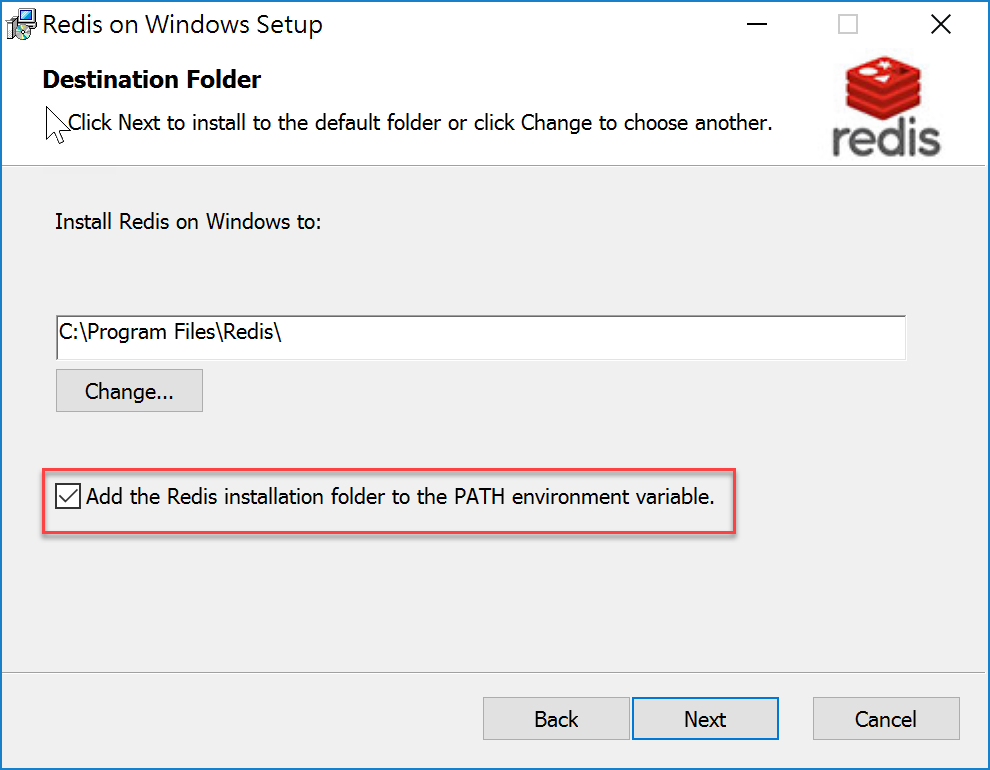
預設的 Port 是 6379 ，勾選下面的按鈕，就可以順便加入防火牆。
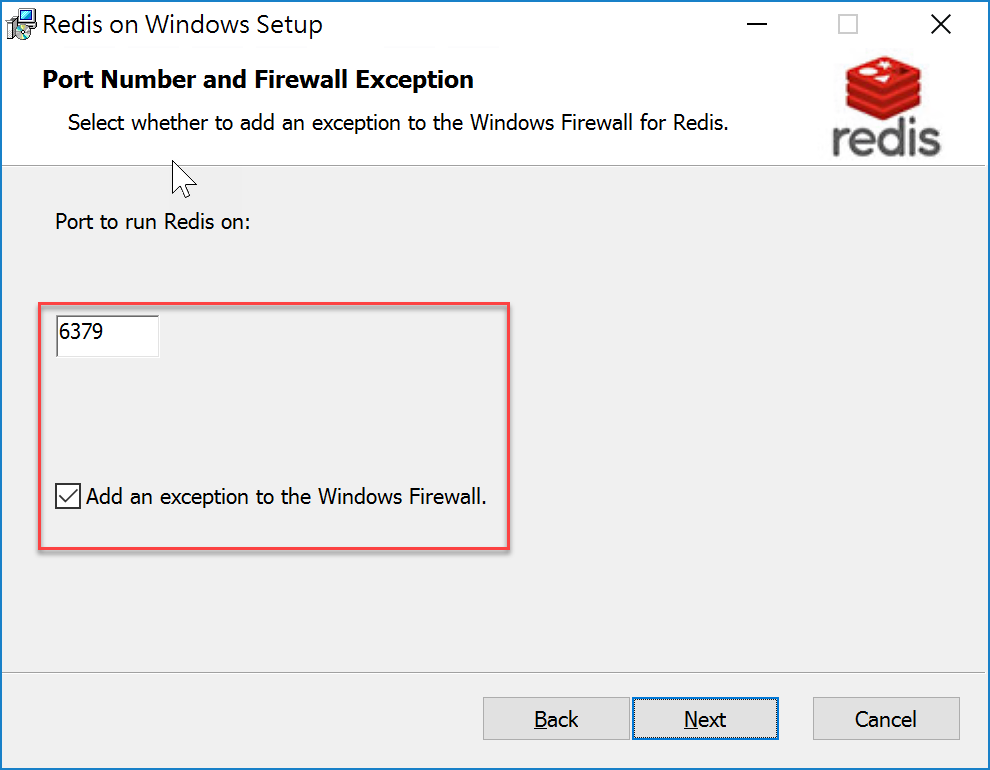
如果想限制 Memory 的大小，可以在這邊進行設定，在正式環境建議設定一下。
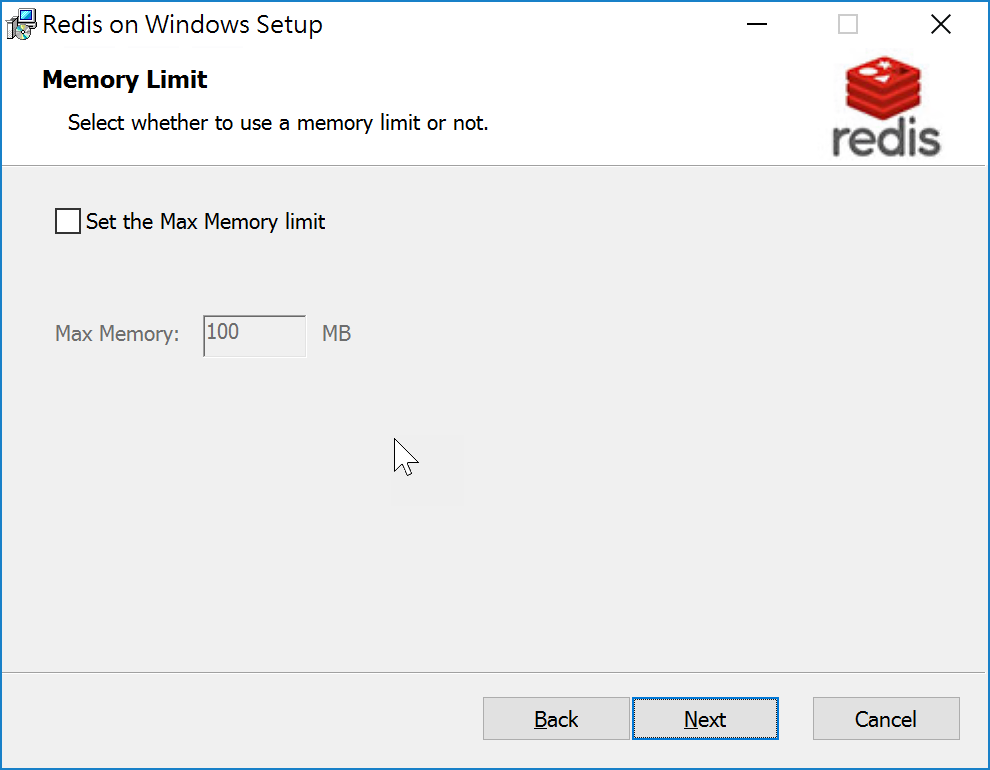
安裝完成後，我們就可以從[服務]底下看到 Redis 的服務已經註冊且已經啟動了。
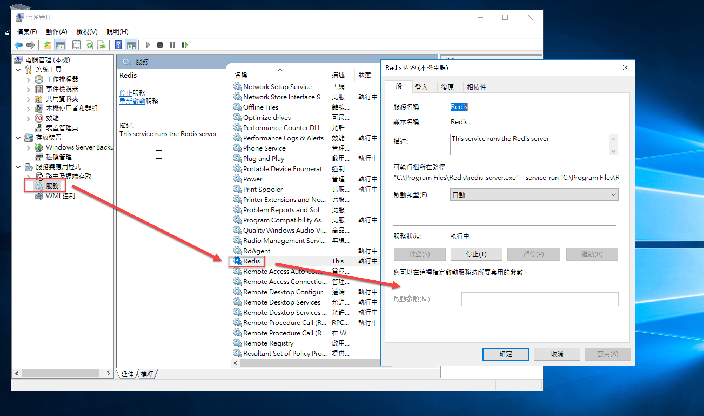
接下來，我們可以從 cmd 裡面輸入
1 | redis-cli info |
來查看目前 Redis 的狀況。
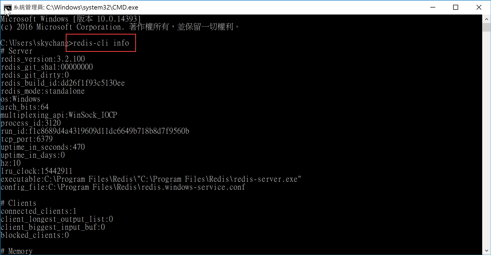
亦可以使用 Get、Set 等指令來塞入值和取得值
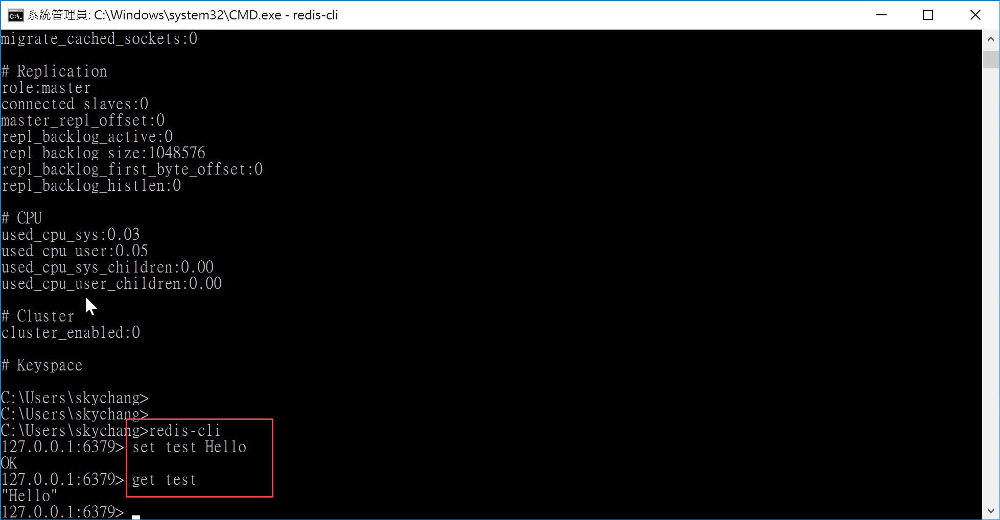
到這邊，最簡單的第一台算是建立完成了；但此時的設定是僅支援 Localhost 的，換言之，
當你想從外面來存取，是會完全被擋住的。
是低，Redis 的 config ，預設只開放 Localhost，所以接下來，我們要修改一下設定。
我們要去 Redis 的安裝目錄下，修改 redis.windows-service.conf 這個檔案，
並且在原本的 bind 127.0.0.1 後面加上這台的私有 ip。
在預設的情況下，為了安全，Redis 只會監聽 127.0.0.1 這個 IP 位置，所以為了讓他能支援內網，
所以我們在 127.0.0.1 後面加上這台 ( Cache-1 ) 的私有 IP。
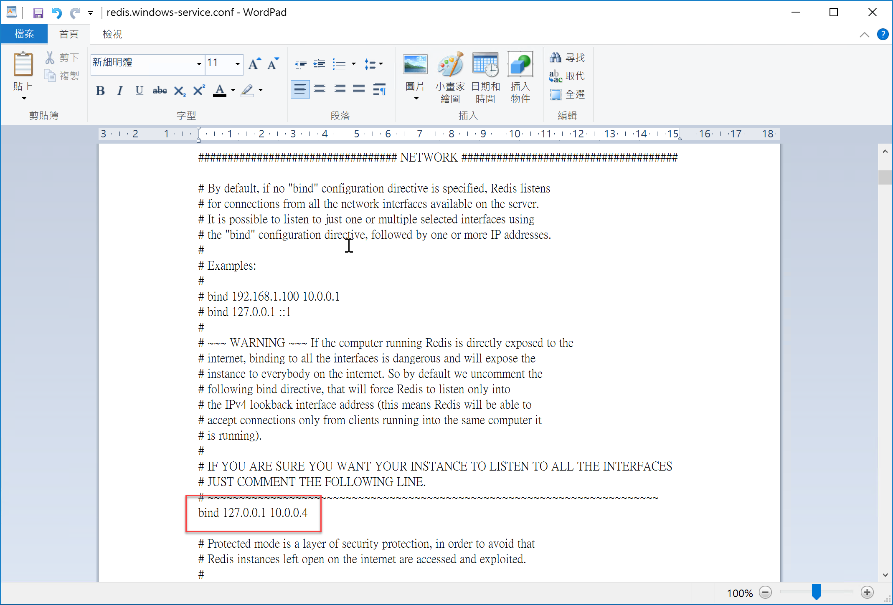
雖然加上上面那個步驟後，就可以從私有網域進行連線，但我們還是希望多加上一下密碼，
所以我們可以把如下圖的地方註解掉；將 requirepass foobared 給註解掉，
其中，foobared 就是密碼；這邊小弟就懶得改嚕。
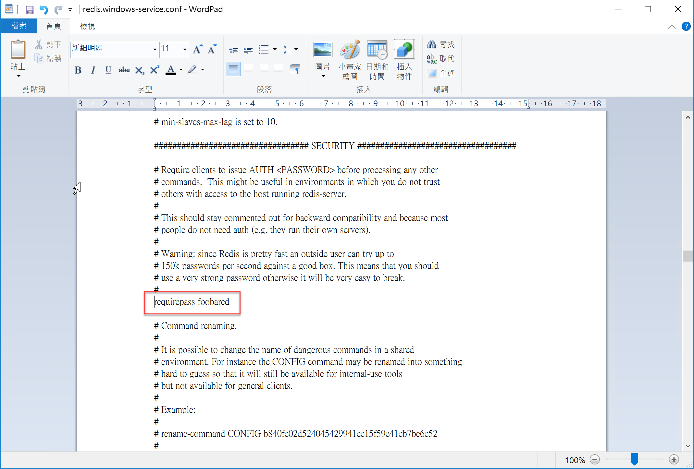
設定完成後，我們這邊重新啟動一下 Redis 後，新的設定檔就會生效了。
接下來，大家可以趕快裝一下 Cache-2 這台機器 ( 裝法同上 ) ，裝完後，我們也先不用進行任何設定，
我們可以直接透過底下命令，連線到 Cache-1 ，並且取得剛剛送進去的 Hello。
( 備註: Key 值的大小寫是有差的喔 )
1 | redis-cli -h 10.0.0.4 -a foobared |

如果，如果，真的想讓這台開放給全世界服務(攻擊)，那必須把 bind 前面加上 # 來註解掉 ( 例: # bind 127.0.0.1 )。
另外，這邊要特別注意一點，Redis 目前有一個參數為 protected-mode yes ，這是一個 Redis 預設的保護參數，
如果把 bind 給註解掉 ( 表示開放 )，且又沒設定 Password，那外部怎樣連都會連不通喔。
所以，要不就是把 protected-mode 設定 no ，要不就是乖乖地給個密碼吧。
( 把 Protected-mode yes 給註解掉是沒用的喔～ )
當然，最理想的狀況，就是只提供私有網域，真的想開放，建議還是設定一個密碼比較好喔。
P.S 如果使用 Azure VM，也別忘了開 Azure VM 的 Endpoint 喔~
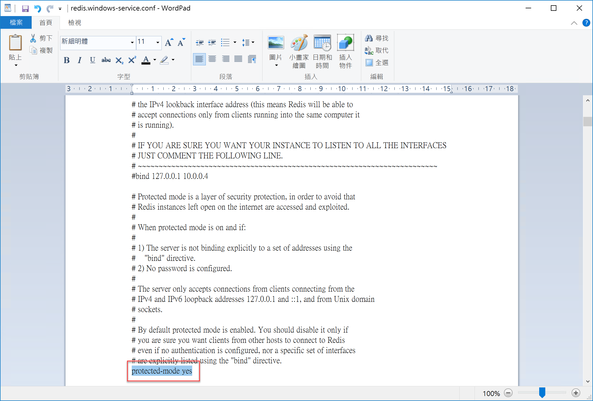
底下是無法存取的情況。
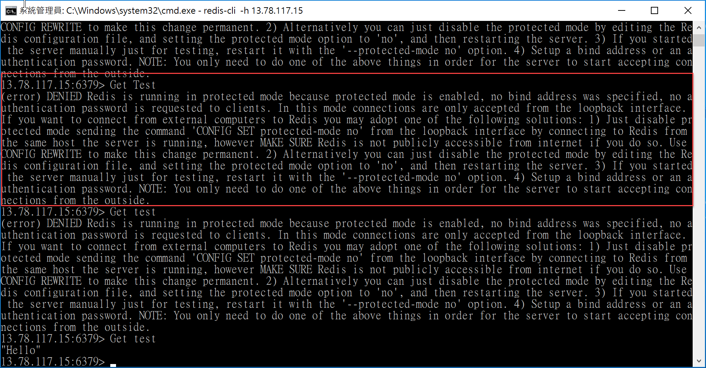
最後，我們還是把設定還原到底下這三個狀態。
1 | bind 127.0.0.1 10.0.0.4 |
設定 Master 和 Slave
目前我們已經裝完了 Master 和 Slave，其中 Master 有簡單的設定一些參數，
而 Slave 目前還沒設定任何參數；然後 Sentinel 連裝都還沒裝…
在開始前，我們先回到 Master ，我們可以先下一下這個指令，來查看複寫的資訊。
1 | redis-cli -h 127.0.0.1 -a foobared info replication |
如下圖，我們可以看到，目前這台是 Master，而連線的 Slave 為 0
( Connected_Slave:0)
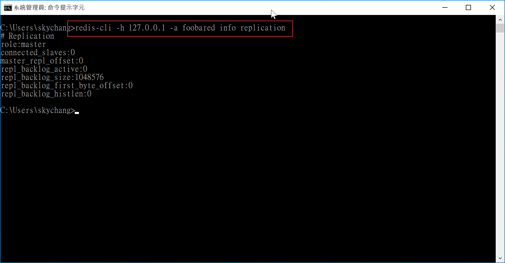
接著，我們也可以觀察一下，預計要變成 Slave 的這台電腦的狀況，我們可以發現，
目前她還是 Master。
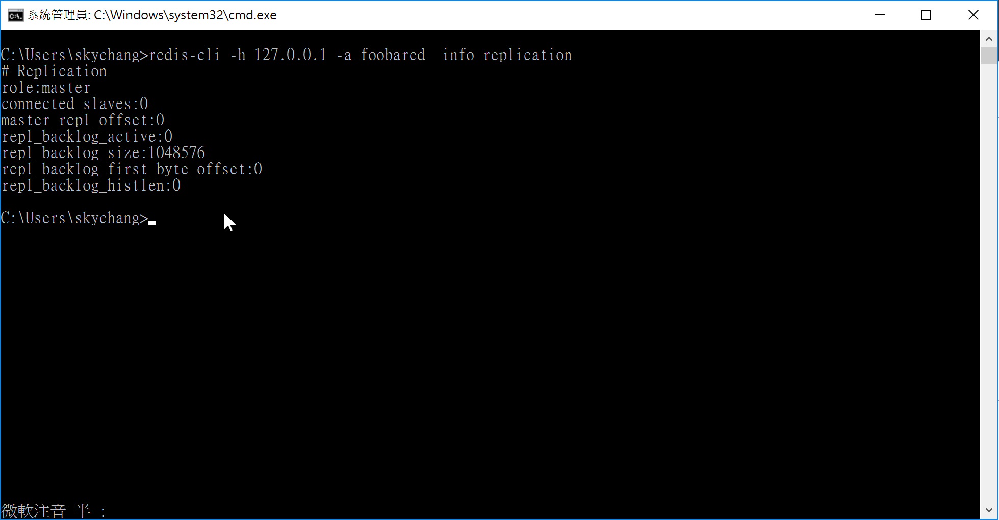
所以目前沒有任何一台 Slave 與我們的 Master 連線 ( 兩台目前都是 Master )，
所以我們將開始進行 Slave 的設定，我們進入 Slave，並且打開 redis.windows-service.conf 這個檔案，
並切找到 # slaveof 這行，拿掉註解，修改成 slaveof 10.0.0.4 6379 ( 代表 Master 的 ip 位置和 Port )，
接著，找到 # masterauth，改成 masterauth foobared ( 代表 Master 的密碼 )。
另外，Bind 127.0.0.1 也要改成 Bind 127.0.0.1 10.0.0.5，也別忘記把 requirepass foobared 取消註解，
讓 Slave 也可以透過 10.0.0.5 並且搭配密碼 foobred 來連入喔。
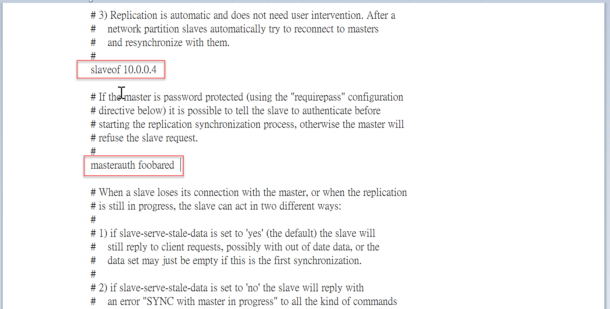
是低，就是那麼簡單，就完成了，然後我們重開 Slave 後，回到 Master 看一下狀態。
可以發現，目前 Slave 已經連上了!!
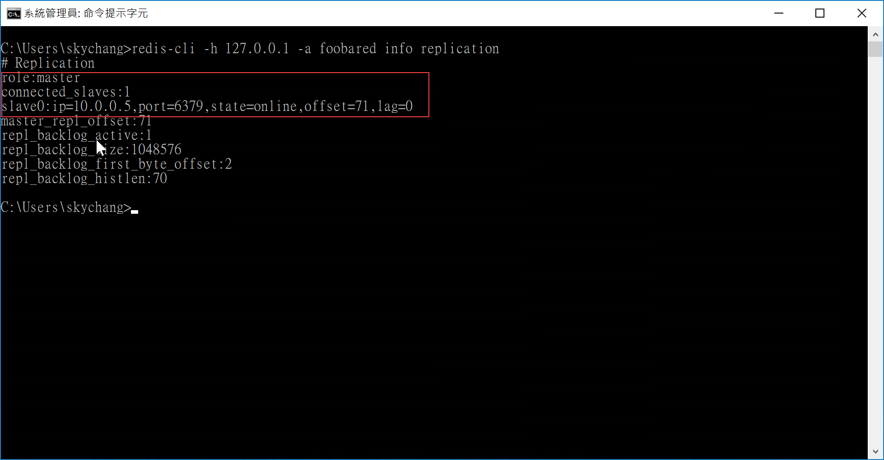
然後回到 Slave 看一下，也可以發現，他從 Master 變成 Slave 了!!
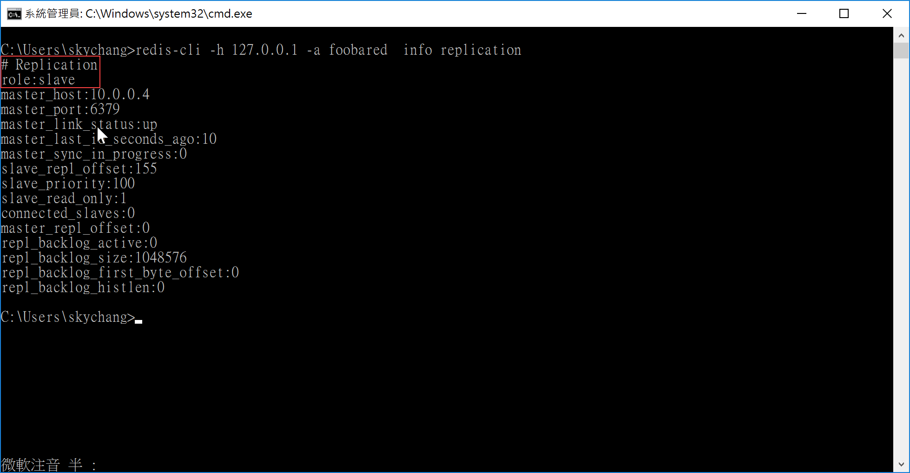
接下來，我們從 Master 塞一個 HelloWorld ，然後連到 Slave，取得資料看看。
我們全部都用 Slave 這台來操作，結果可以參考如下圖；所以這樣設定完，兩台 Redis 就會擁有複寫的功能了，
而且我們可以透過 Master 來讀寫，而 Slave 來進行讀的動作了，不過這邊要特別注意，
Master 提供了讀寫，但 Slave 是僅供讀取而已，是不能寫入的…
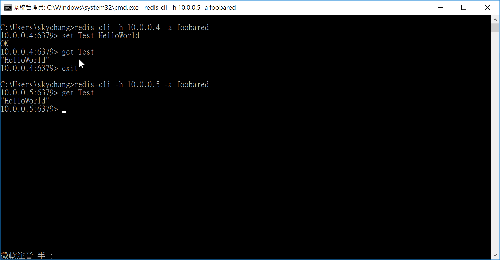
所以，到這邊，如果 Master 掛掉了，會自動把 Slave 切換成 Master 嗎!?
當然不…所以下一個章節，就是第三台機器登場。
設定 Sentinel
我們完成了 Master 和 Slave 的複寫，接下來，就是要建構 Sentinel，Sentinel 的其中兩個功能，
就是監控和切換，他會監控 Master 是否死掉，死了之後，就會把 Slave 變成 Master ( 這樣就可以持續寫入 )，
而原本的 Master 復活後，就會被改成 Slave。
同樣的，我們到 Windows 版本的 GitHub 下載，
但這次我們下載 zip 檔案，下載回來後，找個地方解壓縮，小弟是直接丟在桌面 ( 不好習慣喔~ )
這邊不使用 msi 的原因是因為，使用 msi ，他會自動幫我們註冊到 Windows 的服務，
但我們要啟動 Sentinel ，需要不同的參數，所以我們就不使用 msi 了，
然果真的覺得 Windows 服務比較威，那可以參考這邊，註冊進 Windows 服務。
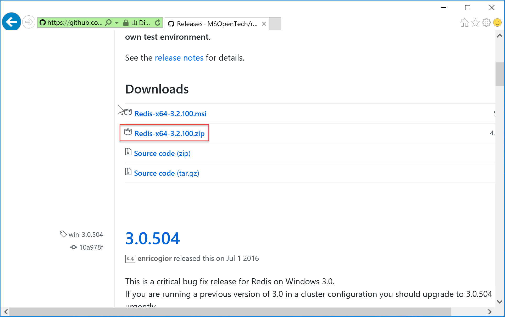
接下來，我們在解開壓縮的那個目錄，增加一個 sentinel.conf 檔案，到時候 Sentinel 的設定就會寫在裡面，如下。
1 | port 26379 |
- port : 代表 Sentinel Port 的位置，通常大家都會用 26379
- bind : 這很重要，至少要加上 127.0.0.1，不然會因為通訊的原因，而造成不斷的去嘗試切換 Master 和 Slave，如果有三台 Sentinel ，後面也要加上這台的 IP，真的不想加這行，也可以把安全模式關閉，改成 protected-mode no
- sentinel monitor : 要監控的 Master ip 和 port，其中 master1 是自訂名稱。
- down-after-milliseconds : 如果在幾毫秒內， 没有回應 sentinel ， 那麼 Sentinel 就會將這台標記為下線 SDOWN （ subjectively down )
- failover-timeout : 轉移過程多久沒完成，算失敗。
- parallel-syncs 在轉移過程，有多少台會和 Master 同步資料， 數字越小，完成轉移的時間越長
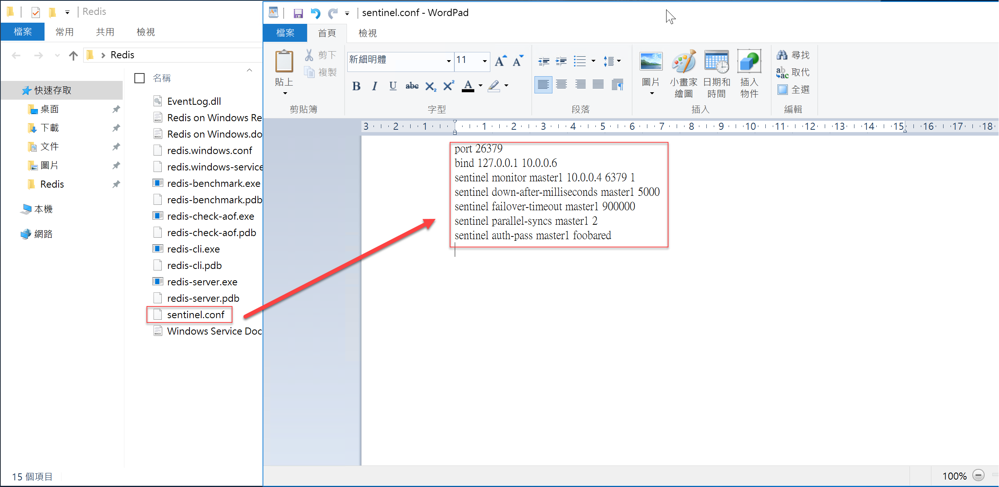
上面完成後，我們還要回到 Master 的機器，設定 redis.windows-service.conf，
找到 # masterauth，改成 masterauth foobared ( 代表 Master 的密碼 )。
需要這樣的原因，是因為，到時候 Master 會被切換成 Slave，如果沒有設定 masterauth foobared，
到時候這台機器會無法和未來的 Master 進行連線。
( 設定完也不忘記重新啟動 )
完成後，我們就可以啟動 Sentinel
1 | redis-server.exe sentinel.conf --sentinel |
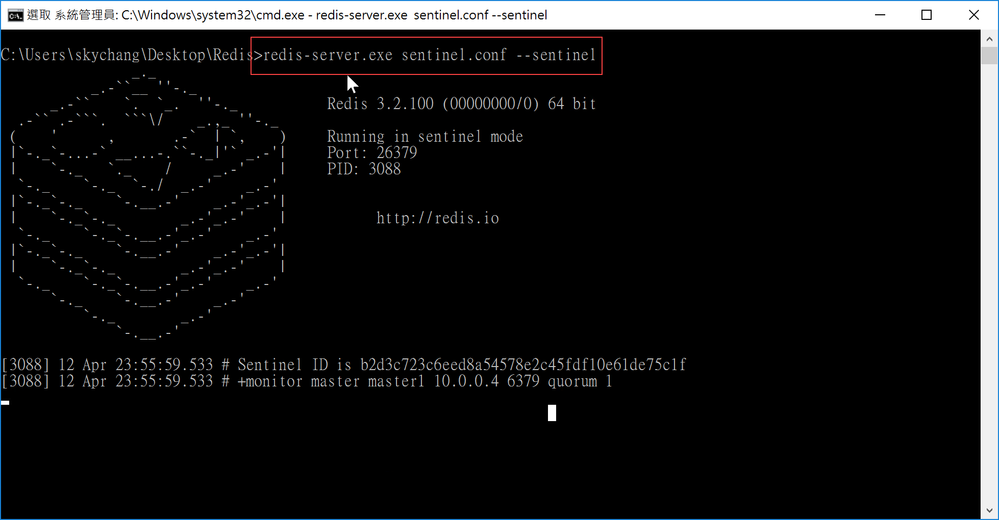
測試轉移
接下來，我們可以測試看看轉移，我們可以先關閉 Master，然後可以從 Sentinel 看到此變化。
馬上就可以看到，他已經把 Salve 切換到 Master 了。
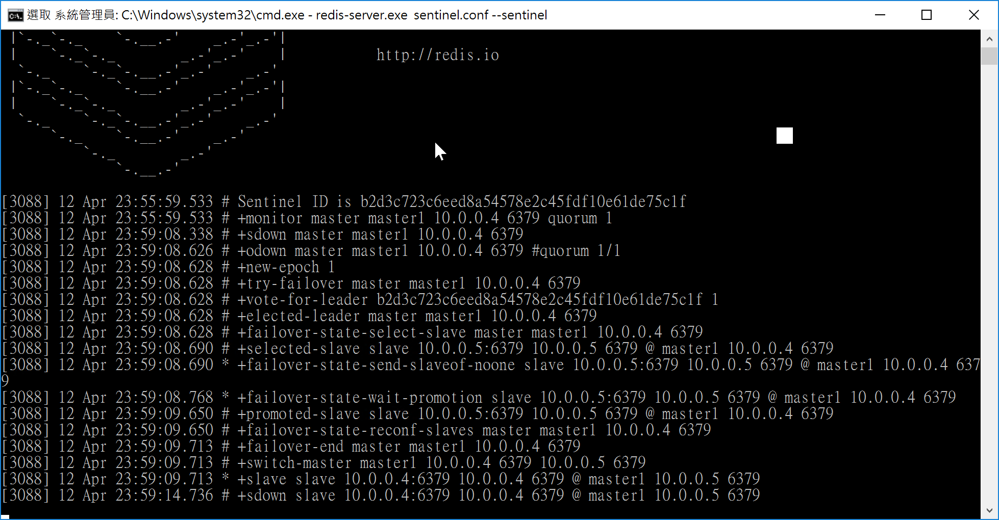
我們也可以看看原本的 Salve，已經變成 Master 了，而且因為原本的 Master 沒啟動，
所以現在沒有任何一台 Salve。
如果再把 Master 啟動回來，我們可以發現，原本這台的資訊還是 Master ，但沒過多久，
Sentinel 就會把 Master 變成 Salve。
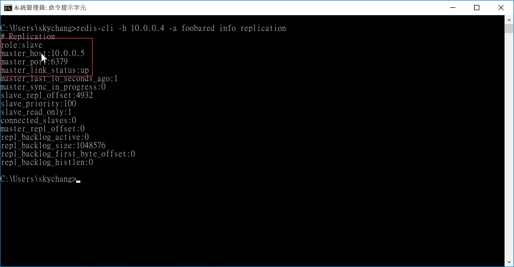
回到新的 Master ，我們依樣可以看到，和新的 Salve 連線也從新連好了。
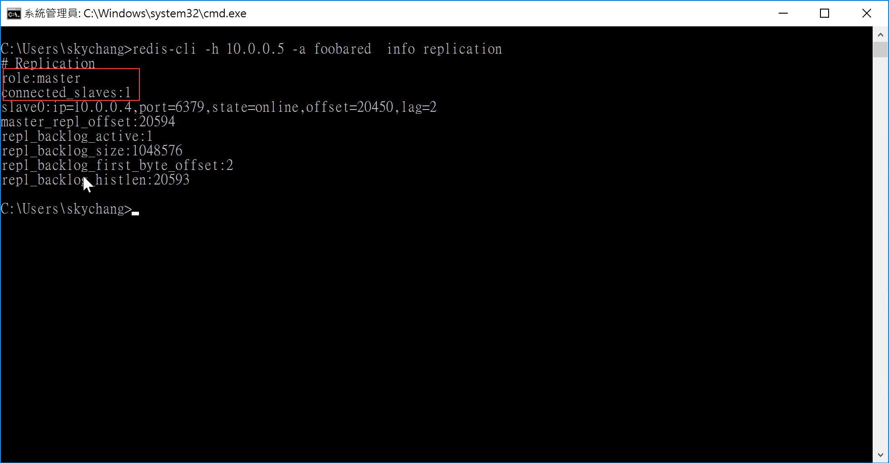
接下來，我們可以看看程式如何搭配。
程式連線
待補
後記
待補
參考資料
- http://stackoverflow.com/questions/31143072/redis-sentinel-vs-clustering
- https://dotblogs.com.tw/supershowwei/2016/02/03/123740
- http://blog.mkfree.com/posts/5257683d479e1dd72e7c1b4e
- https://segmentfault.com/a/1190000002680804
- https://segmentfault.com/a/1190000002685515
- http://mrcto.blog.51cto.com/1923168/1319542
- https://dotblogs.com.tw/supershowwei/2016/02/03/123740
- http://www.jianshu.com/p/51f0cf57df7d
- https://redis.io/topics/sentinel
- http://www.redis.cn/topics/sentinel.html
- http://www.voidcn.com/blog/fighterandknight/article/p-6338983.html
- http://hadb.me/2016/10/23/redis-windows-sentinel/
- http://www.voidcn.com/blog/fighterandknight/article/p-6338983.html
- http://www.redis.cn/topics/sentinel.html
- http://bbs.redis.cn/forum.php?mod=viewthread&tid=715
- https://redis.io/topics/sentinel
- https://dotblogs.com.tw/supershowwei/2017/02/27/163018
- https://github.com/StackExchange/StackExchange.Redis
- https://dotblogs.com.tw/supershowwei/2017/02/27/163018